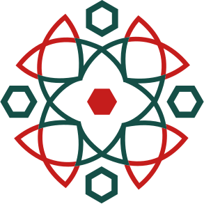

تستهدف هذه الخطة المعتمدة الانتقال بالعمل الإعلامي في اتحاد الطلبة بجامعة حمص من مجرد استجابة فورية للأنشطة والطلبات المتفرقة، إلى منظومة تخطيط إعلامي مؤسسية متكاملة تقوم على أربعة محاور استراتيجية مترابطة:
- المحور الأول: تقييم التجربة السابقة ورصد الأعمال والنتائج والأرقام المحققة بحيادية وموضوعية.
- المحور الثاني: تطوير آليات العمل الداخلي وضبط منظومة التنسيق المؤسسي مع مكاتب الهيئات الطلابية.
- المحور الثالث: إطلاق المبادرات التطويرية النوعية، توحيد الهوية، وتأسيس المسارات التحريرية المستدامة.
- المحور الرابع: تحديد المخرجات المستهدفة ومؤشرات الأداء الرقمية القابلة للقياس والتقييم الدوري.
يستعرض هذا المحور أبرز الجهود والأنشطة المنفذة خلال العام الدراسي السابق والفترة الصيفية عبر ثلاثة مرتكزات رئيسية:
- رصد الإنجازات والنتائج: توثيق المخرجات الإعلامية ومستوى تنفيذ المهام عبر مختلف المنصات الرسمية.
- تقييم الشراكة مع الهيئات: مراجعة آليات العمل المشترك وتحديد مجالات الدعم الفني لمكاتب الكليات والمعاهد.
- استخلاص نقاط القوة والتحديات: تشخيص الواقع العملي لبناء وتطوير خطة العمل للعام الجديد على أسس موضوعية.
شهد عمل قسم الإعلام في اتحاد الطلبة بجامعة حمص خلال العام السابق والعطلة الصيفية توسعاً نوعياً في نطاق المسؤوليات والمهام، والانتقال نحو العمل المؤسسي المنظم عبر المحاور والمسارات التنفيذية التالية:
- إدارة الحضور الإعلامي والمنصات الرسمية: إدارة ومتابعة منصات التواصل الرسمية للاتحاد، وتنسيق التغطيات الإعلامية لكافة الأنشطة والفعاليات الجامعية، والإشراف على إعداد وتصميم المطبوعات والمواد التعريفية المتنوعة للمؤسسة.
- المسارات النوعية والمشاريع المتخصصة: الإشراف المباشر على الأعمال الإعلامية المرتبطة بقطاعات الاتحاد المختلفة ومتابعة مشاريعها ذات الصلة، وفي مقدمتها نادي Focus Media ودليل التخصص الجامعي.
- الإشراف الإعلامي المركزي على مستوى سوريا: تولي واستلام النشر العام على الصفحة الرسمية لـ اتحاد طلبة سوريا، إلى جانب المساهمة المباشرة في قيادة وإدارة فعالية «وجهتك الأكاديمية» إعلامياً على مستوى سوريا بكفاءة عالية، فضلاً عن التنسيق المستمر مع المؤسسات والجهات الإعلامية داخل الجامعة وعلى مستوى المحافظة.
- التنظيم المؤسسي وأدوات إدارة المهام: إعداد هيكلية جديدة للقسم وتوزيع المسؤوليات، واستقطاب أعضاء جدد وإعادة تنظيم تشكيلة الفريق، إلى جانب تفعيل أدوات رقمية لإدارة المهام وتتبع تنفيذها، وإعداد أدلة وملفات مرجعية وسياسات عمل لتوحيد الإجراءات وضمان استمرارية الأداء.
- تنظيم دورة الإنتاج والتفاعل المباشر: مراجعة أساليب العمل وتعزيز التنسيق الداخلي لضبط مراحل الإنتاج (تخطيط، تنفيذ، توثيق، وتقييم)، مع المتابعة الحثيثة لأداء المنصات، والاستجابة اللحظية لاستفسارات ورسائل الطلاب والتفاعل الإيجابي مع تعليقاتهم لبناء الثقة.
- قيادة التغطيات الكبرى واستمرارية النشاط الصيفي: إدارة التغطيات الإعلامية للمناسبات المركزية المفصلية مثل «الذكرى السنوية لتأسيس الهيئات الطلابية»، وتولي التغطية والترويج الاستراتيجي لملتقى «وجهتك الأكاديمية» اللذين حققا انتشاراً قياسياً، إلى جانب التغطية الشاملة لرحلة «ربيع الحرمين» ومتابعة استكمال الهيكلية خلال الصيف.
- الإشراف والدعم للمكاتب الطلابية: المتابعة المستمرة للمكاتب الإعلامية في الهيئات الطلابية والمعاهد وتقديم الدعم الفني والتوجيهات اللازمة، ومتابعة الالتزام بالسياسات الإعلامية لتوحيد الرؤية بين القسم المركزي والمكاتب التابعة له.
شهد الإنتاج الإعلامي لقسم الإعلام تطوراً نوعياً من حيث الحجم والتنظيم، وتوزع وفق المحددات الرئيسية التالية:
- تنوع المنصات المعتمدة: إدارة النشر الممنهج عبر (فيسبوك، إنستغرام، تيليغرام، واتساب، ويوتيوب) بما يلائم اهتمامات الجمهور الطلابي.
- تعدد القوالب التحريرية: تغطية شاملة تتنوع بين المحتوى الإخباري، والتعريفي، والتوعوي، والتفاعلي الهادف.
- مواكبة دورة الفعاليات: التغطية المتكاملة للأنشطة بدءاً من الإعلان والتمهيد، مروراً بالتوثيق الميداني المباشر، وصولاً إلى نشر المخرجات النهائية.
كما امتد العمل ليشمل أنشطة الهيئات الطلابية والجهات المرتبطة بها، ضمن دورة عمل إعلامية متكاملة تضمن انسيابية التنفيذ وجودة المخرجات:
ويوضح الجدول التالي حجم المخرجات الإعلامية وتوزيعها خلال الفترة، استناداً إلى البيانات والإحصاءات المتاحة:
| نوع المادة أو المخرج | تعريفه | العدد خلال الفترة المذكورة |
|---|---|---|
| المواد المنشورة | تصاميم جرافيكية وصور ومواد بصرية منوعة مخصصة للنشر عبر المنصات (باستثناء مقاطع الفيديو) | 578 |
| الفيديوهات والمقاطع القصيرة | مواد مرئية ومقاطع ريلز لتوثيق الأنشطة وإبراز مخرجات العمل | 193 |
| القصص والحالات | محتوى يومي وتفاعلي مؤقت للتحديثات السريعة والتغطية المباشرة | 5.1k |
| التغطيات الإعلامية للفعاليات والأنشطة | توثيق صحفي وميداني مصور لكافة الملتقيات والفعاليات الجامعية | 413 |
| إجمالي المخرجات | 6,284 | |
قيادة وإدارة الحملة التسويقية والتغطية الميدانية الشاملة للفعالية، والتي تُوّجت بتحقيق ملايين المشاهدات والوصول القياسي على مختلف المنصات، وشكّلت علامة فارقة في توجيه وإرشاد آلاف الطلبة الجامعيين والمستجدين.
إنتاج تغطية إعلامية وصحفية وبصرية استثنائية وثّقت إرث وتاريخ ومسيرة العمل الطلابي، وحققت ملايين المشاهدات ومستويات تفاعل وتداول غير مسبوقة، عززت الحضور المؤسسي وتصدّرت المشهد الجامعي.
شهد العمل الإعلامي في اتحاد الطلبة بجامعة حمص (خلال الفترة من 1 تشرين الأول 2025 ولغاية 1 تشرين الأول 2026) تطوراً نوعياً في أسلوب تقديم المحتوى وتنظيمه عبر الركائز التالية:
- توسيع قاعدة ونوعية المحتوى: الانتقال من التركيز على تغطية الفعاليات والأنشطة إلى تقديم محتوى متنوع يراعي مختلف الفئات والشرائح الطلابية المستهدفة، ويغطي أعمال كافة مكاتب وأقسام الاتحاد.
- السرعة والاحترافية: التركيز المنهجي على زيادة سرعة النشر وجودة المحتوى، مع إبراز قصص النجاح والأنشطة بطريقة أكثر احترافية، ليكون التفاعل مع نشاطات الاتحاد بالمستوى الذي يعكس حجم العمل الحقيقي والجهود الميدانية المبذولة على الأرض.
- تبويب المحتوى (Highlights): تنظيم المواد المنشورة ضمن أقسام مميزة في خاصية القصص المثبتة (Highlights) لتسهيل رجوع الطلاب إلى المعلومات والمحتويات السابقة بسرعة، وتحسين تنظيم الحضور الرقمي للاتحاد.
حرص القسم على تعزيز التواصل مع الطلبة بحيث يصبح الإعلام وسيلة لبناء الثقة وليس مجرد منصة أخبار، متخذاً من التفاعل المباشر ركيزة أساسية عبر:
- احتواء الآراء والملاحظات: التعامل الإيجابي مع تفاعلات الطلاب بمختلف أنواعها، بما في ذلك التعليقات النقدية والملاحظات البناءة، مع احتوائها وسرعة التفاعل معها بروح مسؤولة.
- التقارب وبناء الثقة: رصد انطباعات الجمهور الطلابي ورضاهم عن مستوى وسرعة التواصل، بما يدعم تطوير المحتوى وتعزيز جسور الثقة المتينة بين الاتحاد والطلبة بوصف التفاعل جزءاً لا يتجزأ من صلب العمل الإعلامي.
متابعة تفاعل الطلاب على المنصات أولاً بأول من قبل مسؤول المنصات، لرصد أي تساؤلات أو ردود فعل ومواكبتها بشكل لحظي.
عدم الانجرار خلف الاستفزازات أو الردود الهجومية، والتعامل مع الشكاوى أو الاستفسارات بأسلوب هادئ وموضوعي أو توجيه الطالب للجهة الإدارية المختصة داخل الاتحاد.
في حال حدوث أي خطأ مطبعي أو معلومة غير دقيقة في المنشور، يتم التعديل أو التنويه فوراً بشفافية تامة لتجنب تداول الشائعات وتثبيت الموثوقية.
عكست التغذية الراجعة والتقييم الإداري تحولاً إيجابياً ملموساً في الصورة الذهنية العامة للاتحاد:
- تغذية راجعة إيجابية متواصلة: رصد انطباعات مشجعة وتقدير واسع من الطلبة لتطور تغطية الأحداث والفعاليات ونشر نتائجها ومخرجاتها عبر المنصات مع إتاحة المجال للتفاعل والمشاركة.
- وضوح الدور المؤسسي: إبراز حجم جهود وأنشطة الاتحاد بصورة مستمرة وأكثر تنوعاً وتواصلاً، بما رسخ وضوح رسالته ودوره الخدمي أمام الطلاب وعزز مشاركتهم الفاعلة.
استندت متابعة الأداء الإعلامي إلى البيانات والإحصاءات الموثقة عبر منصة Meta Business Suite ومؤشرات ورؤى الصفحات والمنصات، خلال الفترة الممتدة من 1 تشرين الأول (أكتوبر) 2025 ولغاية 1 تشرين الأول (أكتوبر) 2026.
| المؤشر الرقمي | فيسبوك (Facebook) |
انستغرام (Instagram) |
تيليغرام (Telegram) |
واتساب (WhatsApp) |
يوتيوب (YouTube) |
|---|---|---|---|---|---|
| المشاهدات (Views) | 11.9M | 18.8M | ~430K | 90K | 16.6K |
| الوصول (Reach) | 2.71M | 1.2M |
قنوات بث وتوجيه فوري
تعتمد المنصتان نموذج النشر التوجيهي المباشر؛ ويُرصد أثرهما عبر المشاهدات المباشرة (أعلاه) والمواد المنشورة (أدناه)، دون انطباق مؤشرات التفاعل والوصول الحسابي وزيارات الملفات الشخصية.
طبيعة برمجية مخصصة للمشاهدات
|
مشمول بالمشاهدات | |
| التفاعلات (Interactions) | 256.7K | 419.8K | 2.1K | ||
| زيارات الحساب والملف الشخصي | 260.7K | 137.2K | — | ||
| المتابعات والاشتراكات الجديدة | +16.8K | +25.8K | +1.3K | ||
| المنشورات ومقاطع الفيديو |
397 مادة (الجديدة: 196 | القديمة: 201) ما بين فيديوهات وصور |
771 مادة ما بين فيديوهات وصور |
86 منشوراً و 19 فيديو (من يوليو إلى أكتوبر) |
50 منشوراً و 19 فيديو (من أبريل إلى أكتوبر) |
40 فيديو (خلال فترة الرصد) |
- فترة الرصد المعتمدة: تم رصد كافة المؤشرات الرقمية الواردة في هذا الجدول خلال الفترة الممتدة من 1/10/2025 لغاية 1/10/2026 (عام كامل)، باستثناء قنوات تيليغرام وواتساب ويوتيوب التي رُصدت فتراتها التأسيسية المحددة بعد الإطلاق.
- فيسبوك (Facebook): تمثل القيم الواردة في الجدول المجموع التراكمي لجهود النشر عبر صفحة فيسبوك الجديدة والصفحة القديمة (المشاهدات: 11.9M، الوصول: 2.71M، التفاعلات: 256.7K، زيارات الملف: 260.7K، وإجمالي المواد المنشورة: 397 مادة ما بين فيديوهات وصور)، ما عدا بند المتابعات الذي حُصرت فيه متابعات الصفحة الجديدة فقط (16.8 ألف متابع جديد). وتفصيل ذلك:
• الصفحة الجديدة: حققت 4.6 مليون مشاهدة، و807 ألف وصول، و97.8 ألف تفاعل، و107 آلاف زيارة للملف، و16.8 ألف متابع جديد، ونشر 196 مادة ما بين فيديوهات وصور.
• الصفحة القديمة: حققت 7.3 مليون مشاهدة، و1.9 مليون وصول، و158.9 ألف تفاعل، و153.7 ألف زيارة لصفحة الحساب، ونشر 201 مادة ما بين فيديوهات وصور؛ علماً أن قاعدة متابعي الصفحة القديمة البالغة ما يقارب 30 ألف متابع لم يتم احتسابهم ضمن إجمالي متابعي الجدول تجنباً للازدواجية. - انستغرام (Instagram): سجّل الحساب نشاطاً مكثفاً بإجمالي 771 مادة منشورة ما بين مقاطع فيديو وتصاميم، محققاً 18.8 مليون مشاهدة و419.8 ألف تفاعل.
- تيليغرام وواتساب: تم رصد حركة النشر المباشر والمشاهدات المحققة عبر القناتين خلال الفترات المحددة بعد الإطلاق (تيليغرام: 86 منشوراً و19 فيديو ونحو 430 ألف مشاهدة من يوليو إلى أكتوبر | واتساب: 50 منشوراً و19 فيديو و90 ألف مشاهدة من أبريل إلى أكتوبر)، ودُمجت حقولهما في مؤشرات الوصول والتفاعل وزيارات الملف لكونهما تعتمدان نموذج البث المباشر المقتصر على المشاهدات والنشر المباشر.
- يوتيوب (YouTube): نُشر 40 فيديو عبر القناة خلال فترة الرصد المحددة بعد إطلاقها، مسجلة 16.6 ألف مشاهدة و2.1 ألف تفاعل و1.3 ألف مشترك جديد.
- الأثر الإجمالي الموحّد: حقق المحتوى الرقمي عبر كافة المنصات مجتمعة ما يزيد عن 31.2 مليون مشاهدة، ووصولاً إجمالياً تخطى 3.9 مليون حساب، وأكثر من 678 ألف تفاعل، واستقطاب ما يزيد عن 43.9 ألف متابع ومشترك جديد عبر الحسابات النشطة (مع تحييد متابعي الصفحة القديمة البالغين قرابة 30 ألف متابع).
عمل قسم الإعلام المركزي خلال العام الماضي وفترة الصيف على توفير الدعم الإعلامي والفني والتقني للمكاتب الإعلامية في الهيئات الطلابية والمعاهد، لتعزيز حضورها وتمكينها من أداء مهامها بكفاءة وتوحيد التوجهات الإعلامية المشتركة عبر المسارات التالية:
- قنوات التواصل والربط الميداني: اعتماد مجموعة مركزية مخصصة على تطبيق Telegram تضم مديري المكاتب الإعلامية ونوابهم والكفاءات الفاعلة، شكّلت مساحة لتبادل التوجيهات، وتحديد الاحتياجات الفنية واللوجستية، ومتابعة وحل المشكلات التشغيلية.
- الإشراف والمراجعة والاعتماد: متابعة الحضور الإعلامي للهيئات، والتأكد من وجود الاتحاد بصفة إشرافية ضمن الحسابات الرسمية، ومراجعة المحتوى والتصاميم قبل النشر والموافقة عليها لضمان اتساق الخطاب والالتزام بالسياسات والتوجهات المعتمدة.
- معالجة تحديات المكاتب والكوادر: المتابعة الحثيثة للمشكلات الميدانية على صعيد الموارد البشرية والفرق، وتوجيه المكاتب للتعامل مع معوقات التنفيذ وتأمين البدائل المناسبة.
- مستوى الالتزام العام: تفاوت مستوى الالتزام بالتوجيهات بين الهيئات، مع اتجاه عام إيجابي ومستوى جيد نسبياً، عززه استمرار المتابعة الحثيثة والعمل على معالجة الفجوات أولاً بأول.
أثمر التعاون الميداني بين قسم الإعلام المركزي والمكاتب الإعلامية عن نتائج ملموسة انعكست إيجاباً على المشهد الإعلامي الطلابي:
- الدعم التخصصي والتقني: توفير الإمكانات والتوجيه الفني في مجالات التغطيات الصحفية، والتصوير الفوتوغرافي والفيديو، والمونتاج، بما ساعد الهيئات على إبراز أنشطتها وتحسين جودة مخرجاتها البصرية.
- اكتشاف واستقطاب الكفاءات: التعرف على مواهب وكوادر طلابية متميزة في الكليات، واستقطاب نخبة منها للعمل ضمن الفريق المركزي للقسم، مع تمكين بقية الكوادر لتعزيز دورها القيادي والإعلامي داخل هيئاتها وفي المجتمع الطلابي.
أظهرت عملية التقييم الدوري للمكاتب الإعلامية في الهيئات الطلابية والمعاهد ملامح الأداء التالية:
- تفاوت الإمكانات والكوادر: تباين أداء المكاتب بحسب وفرة الكوادر المتخصصة وخبراتها السابقة، مما انعكس بدوره على حجم الإنتاج الإعلامي ومستوى مخرجات كل هيئة.
- نقاط قوة وتميز نوعي: برزت لدى عدة مكاتب جودة عالية في صياغة المحتوى وإخراجه وتحقيق الأثر المطلوب، وحظيت هذه المكاتب بدعم وتقدير القسم لترسيخ روح التنافسية الإيجابية.
- مضاهاة المستويات المتقدمة: وصلت بعض الأعمال المنجزة من قبل الهيئات الطلابية المتميزة إلى مستوى احترافي رفيع يضاهي، وفق تقييم إدارة القسم، أعمالاً إعلامية صادرة عن فروع واتحادات طلابية في محافظات أخرى، مما يثبت جدوى الدعم المستمر والتأهيل.
يمتلك قسم الإعلام تشكيلة بشرية متكاملة يُعدّ قوامها كافياً للمرحلة الراهنة مع قابلية للتوسع المستقبلي، وتتسم بالخصائص التنظيمية التالية:
- تنوع الاختصاصات والمهارات: يضم الفريق مجالات متعددة تشمل (التصميم الجرافيكي، التصوير الاحترافي، المونتاج المرئي، إدارة المنصات والنشر، صياغة المحتوى، الأرشفة الرقمية، التدقيق اللغوي، والمتابعة والتقييم)، مما يتيح إنجاز معظم المهام ذاتياً.
- المرونة ومواجهة ضغوط العمل: أثبت الفريق جاهزية عالية في استيعاب كثافة المهام خلال فترات الذروة، مستفيداً من المرونة في توزيع وتبادل الأدوار والتكيف السريع مع المستجدات الميدانية.
- التوازن والجاهزية للتوسع: تفاوت الحاجة لتعزيز بعض التخصصات الدقيقة لا يشكل عائقاً تشغيلياً، لكنه يمثل مساراً للتطوير المستمر واستقطاب الخبرات التخصصية الداعمة.
تتوافر لدى القسم مجموعة من المعدات والتجهيزات التي تدعم أعمال التصوير والإنتاج الإعلامي، وتشمل:
- معدات التصوير والتثبيت: كاميرا من سلسلة Sony Alpha مزودة بعدستين، وجهاز DJI Osmo Pocket 3، ومثبت DJI RS 4، وحامل ثلاثي خفيف.
- معدات الصوت: جهاز DJI Mic Mini.
- معدات الإضاءة: إضاءة Litemons C30Bi، وإضاءة LED Panel Light.
- أجهزة ووسائط التخزين: هاتف Redmi Note 15، وذاكرة فلاش SanDisk بسعة 128 غيغابايت، وقرص تخزين Seagate HDD بسعة 4 تيرابايت.
- موارد إضافية: الهواتف الشخصية وأجهزة الحاسوب الشخصية المتاحة لدى أعضاء الفريق.
أما على مستوى البرامج والأدوات الرقمية، فيعتمد القسم على مجموعة متنوعة من التطبيقات والخدمات، من أبرزها:
- التصميم: Adobe Illustrator وAdobe Photoshop وCanva، إلى جانب تطبيقات تصميم أخرى على الهواتف المحمولة.
- المونتاج: Adobe Premiere وCapCut وInShot، بحسب الأداة المستخدمة على الحاسوب أو الهاتف.
- إدارة المحتوى والنشر: Meta Business Suite لإدارة الصفحات.
- تنظيم العمل والتواصل: Trello وTelegram وخدمات Google Workspace وWhatsApp.
وبوجه عام، تُعد الإمكانات التقنية المتاحة كافية إلى حدٍّ ما لتلبية متطلبات العمل الحالية، مع وجود حاجة إلى تطويرها وزيادة عدد بعض التجهيزات بما يواكب تطور حجم المهام ومتطلبات الإنتاج الإعلامي.
يتبع القسم منهجية عملية لتحقيق أقصى فاعلية تشغيلية من الموارد المتوفرة:
- الموازنة وتحديد الأولويات: المواءمة الدقيقة بين الاحتياجات الفعلية والموارد المتاحة، وتوجيه الطاقات نحو التغطيات ذات الأولوية وإنتاج المحتوى وتلبية الطلبات الإعلامية المؤثرة.
- العوامل الذاتية الحافزة: الاستناد إلى مرونة الأعضاء، وقدرات التواصل الفعالة، والقدرة على تعدد المهام (Multitasking) وتحمل أعباء العمل الإضافية بروح الفريق.
- التشغيل العملي الواقعي: التركيز على الفاعلية الحقيقية للمعدات والأدوات في الميدان ومتابعة نتائجها على أرض الواقع، بدلاً من مجرد التوفر النظري للموارد.
رغم الاستقرار العام وعدم تسجيل حالات عجز متكررة، حدد التقييم الإداري متطلبات الارتقاء المستقبلي بالأداء:
- صقل المهارات التخصصية: التطوير المستمر للقدرات التحريرية والفنية للفريق لرفع مستوى الجاهزية ومواكبة الاتجاهات الإعلامية الحديثة.
- الاشتراكات والبرمجيات الاحترافية: دراسة توفير اشتراكات رسمية في التطبيقات والأدوات الرقمية والخدمات السحابية المتقدمة التي يحتاجها صناع المحتوى.
- أدوات الذكاء الاصطناعي والتأهيل الأكاديمي: تأمين اشتراكات في أدوات الذكاء الاصطناعي لتطوير العمل ومواكبته، بالإضافة للاشتراك بالكورسات والدبلومات الأونلاين لتطوير الكوادر.
- تحديث البيئة والتجهيزات التقنية: استكمال التجهيزات والمعدات الفنية وتطوير بيئة العمل بما يلبي المتطلبات المتزايدة للإنتاج المرئي.
أظهر أداء قسم الإعلام خلال العام الدراسي السابق والفترة الصيفية نمواً متصاعداً وتماسكاً تنظيمياً تجلى في المؤشرات التالية:
- تحسين الصورة الذهنية للاتحاد: المساهمة الفاعلة في ترسيخ سمعة رقمية احترافية للاتحاد عبر تقديم محتوى متنوع يراعي اهتمامات الطلبة ويعزز شعورهم بالانتماء للمؤسسة.
- التفاعل الحي والشفافية: تعزيز التواصل المباشر مع الجمهور عبر الوسائل الرقمية المتاحة (القصص، الاستبيانات، الرد على التعليقات وبريد المنصات)، والاستماع لآراء الطلبة بمهنية وموضوعية.
- المرونة ومواجهة ضغوط العمل: قدرة الفريق على تلبية طلبات مختلف المكاتب والأقسام ضمن مدد زمنية ضيقة، والتعامل مع كثافة إنتاجية بلغت في أوقات الذروة نحو 10 مواد وتغطيات يومياً بكفاءة واقتدار.
واجهت مسيرة العمل مجموعة من الصعوبات الموضوعية المرتبطة بالبيئة التشغيلية:
- طبيعة العمل التطوعي الجامعي: ارتباط أعضاء الفريق بالتزامات دراسية وامتحانات وتفاوت الأولويات الشخصية، مما يفرض تحديات دورية على تنظيم الوقت وتوزيع أعباء العمل واستمرارية التنفيذ.
- استنزاف الموارد في منتجات غير مفعلة إدارياً: إنتاج وتجهيز مواد رقمية وتصاميم وحملات متكاملة بذل فيها الفريق جهوداً كبيرة، إلا أنها حُجبت أو تم إخفاؤها ولم تجد طريقها للنشر لعدم موافقة الإدارة أو تغير التوجيهات اللحظية، مما يشكل هدراً تشغيلياً يستلزم ضبط قنوات الاعتماد المسبق.
- تفاوت التنسيق المسبق وتدفق المعلومات: ضعف التنسيق المبكر من قبل بعض الأقسام الطالبة وتأخر تزويد الإعلام بالبيانات الكافية، مما يسبب ضيقاً في فترات التنفيذ ويضغط جودة المخرجات.
- تداخل الصلاحيات الإجرائية: عدم وضوح حدود المسؤوليات أحياناً بين الأقسام الطالبة والمكتب الإعلامي، مما استوجب بناء أطر عمل مؤسسية حاسمة.
استخلصت إدارة القسم جملة من الركائز الاستراتيجية المستفادة من التجربة الميدانية:
- البناء المؤسسي الواضح: حتمية تطوير البنية الداخلية للعمل وتحديد المسؤوليات بدقة لتخفيف العبء عن الأفراد وضمان انسيابية المهام.
- التطوير التدريجي التراكمي: ترسيخ روح العمل الجماعي والتحسين المستمر خطوة بخطوة بما يلائم الواقع التطوعي والإمكانات المتاحة دون قفزات غير واقعية.
- التخطيط والاستباقية قبل النشر: إدراك أن جودة المحتوى تتطلب تنسيقاً مسبقاً وتأهيلاً مهارياً مستمراً ومواكبة رقمية، وليس مجرد سرعة استجابة لحظية.
استناداً إلى التقييم السابق، تبرز الأولويات التالية التي ينبغي مراعاتها عند إعداد خطة عمل العام الدراسي الجديد:
- تطوير مهارات الفريق الإعلامي: تعزيز القدرات الفنية والتحريرية والتنظيمية، بما يسهم في رفع جودة المخرجات وتحسين القدرة على التعامل مع ضغط العمل.
- توسيع مسارات العمل الإعلامي وتطوير المسارات القائمة: الاستجابة للاحتياجات المتزايدة للقسم، وتطوير مجالات الإنتاج والتغطية بما يتناسب مع الإمكانات المتاحة.
- الارتقاء بجودة المحتوى وتعزيز التفاعل مع الجمهور: مواكبة تطورات الإعلام الرقمي، وتطوير أساليب تقديم المحتوى، وزيادة إشراك الطلبة والاستماع إلى آرائهم واحتياجاتهم.
- تحسين التنسيق المؤسسي وتنظيم الإجراءات: تعزيز التنسيق المسبق بين قسم الإعلام وبقية أقسام الاتحاد، بما يحد من الاستعجال غير المخطط له، ويحسن وضوح المتطلبات وتوقيت تنفيذها.
وتشكّل هذه الأولويات أساساً لتطوير آليات العمل القائمة وإطلاق المبادرات الجديدة، بما يحافظ على المكتسبات المحققة، ويعالج التحديات التشغيلية، ويدعم استدامة الأداء الإعلامي وتطوره خلال العام الدراسي الجديد والفترة الصيفية.
انطلاقاً من تقييم تجربة العام السابق، يستهدف هذا المحور ضبط وتطوير منظومة العمل الداخلي والتنسيق المؤسسي عبر الركائز التالية:
- ضبط الهيكل التشغيلي: توضيح الصلاحيات والمسؤوليات وتوزيع المهام وفق الاختصاص مع مرونة التنفيذ الميداني.
- توحيد قنوات التواصل والطلب: مأسسة استقبال وإسناد التغطيات والمهام عبر القنوات والأدوات الرقمية المعتمدة.
- الأرشفة المركزية الشاملة: حماية الرصيد الإعلامي وتنظيم الملفات وسهولة استرجاعها وإعادة استثمارها.
- بروتوكول الشراكة مع الهيئات: تأطير العلاقة المؤسسية مع مكاتب الكليات والمعاهد وضمان وحدة الخطاب والهوية.
شهد قسم الإعلام خطوات مهمة في تنظيم العمل الداخلي والانتقال نحو أسلوب مؤسسي احترافي؛ إذ سعينا لبناء فريق يعمل بروح واحدة، لأن الإعلام الناجح منظومة متكاملة تتكاتف فيها الطاقات وتتوزع فيها المسؤوليات بوضوح وتناغم وفق المرتكزات التالية:
- التوزيع التخصصي للمهام: إسناد الأعمال وفق الكفاءة والخبرة النوعية لكل عضو للحد من العشوائية وتعزيز وضوح المرجعيات.
- المرونة التشغيلية الميدانية: الموازنة بين التخصص وتوافر الكوادر لتغطية كافة الفعاليات الطارئة والميدانية بكفاءة.
وتتوزع مجالات العمل والتنظيم المؤسسي ضمن قسم الإعلام وفق المسارات الخمسة الأساسية التالية:
الإشراف العام وتحديد الرؤية، بناء الخطط الاستراتيجية، إدارة الأولويات، متابعة مؤشرات الأداء، والتنسيق المؤسسي مع قيادة الفرع.
التنسيق المباشر مع الهيئات الطلابية والمكاتب التنفيذية، وإدارة متطلبات التغطيات الميدانية للأنشطة والفعاليات المشتركة.
صناعة الأفكار وصياغة النصوص التحريرية والبيانات، ضبط الخطاب الإعلامي، وتوحيد الرسائل الموجهة للوسط الطلابي.
تطبيق وحماية الهوية البصرية، تصميم الغرافيك، التصوير الفوتوغرافي والفيديو، المونتاج، وضبط معايير الجودة الفنية للمخرجات.
جدولة وبث المحتوى على كافة المنصات الرقمية، إدارة التفاعل الحي، الرصد والمتابعة اللحظية، وتحليل البيانات الإحصائية الدورية.
يعتمد سير العمل حالياً على إشراف عام من مدير القسم، بالتوازي مع تفويض مسؤوليات اتخاذ القرار بحسب الاختصاصات وطبيعة المهام؛ إذ تُدار القرارات الفنية والتنفيذية ومراحل المراجعة والاعتماد ضمن المجالات المعنية، مما يمنع حصر القرارات في مسار واحد ويسرع دورة الإنتاج مع الحفاظ على اتساق العمل مع التوجهات العامة.
واستكمالاً لهذه الخطوات، يستهدف القسم تثبيت الهيكل التشغيلي وتطويره من خلال:
- إعداد توصيف واضح للأدوار والمسؤوليات والصلاحيات، وتحديد مسارات الإشراف والمراجعة والاعتماد بحسب نوع المهمة، بما يعزز وضوح المرجعيات ويحد من احتمالات تداخل المسؤوليات.
- تنظيم آليات بديلة لتوزيع المهام عند غياب أحد الأعضاء، ومراعاة الاختصاصات والقدرات عند إسناد الأعمال.
- توضيح حدود صلاحيات اتخاذ القرار في مختلف مراحل التنفيذ.
- اعتماد آلية مرنة لمراجعة الهيكل التشغيلي وتحديثه عند حدوث تغييرات في تشكيل الفريق أو توزيع الأدوار، بما يضمن استمرار العمل واستقرار المسؤوليات رغم تغير الظروف أو توافر الأعضاء.
وتهدف هذه الإجراءات إلى ترسيخ منظومة عمل واضحة ومستدامة، تعزز كفاءة الأداء، وتدعم المساءلة، وتحافظ على مرونة الفريق وقدرته على الاستجابة لمتطلبات العمل الإعلامي.
يعتمد قسم الإعلام في استقبال الطلبات وتتبع تنفيذها على منظومة رقمية متكاملة تقوم على مسارين:
- قنوات استقبال الطلبات والتوجيه: استقبال المهام عبر بوت تيليغرام المخصص لطلبات التغطيات والتواصل المباشر، ثم إحالتها للشخص المختص لجدولتها وتوزيعها على الكوادر وفق طبيعة المهمة.
- متابعة التنفيذ والتنسيق الفوري: إدارة المهام وتتبع مراحل إنجازها بدقة عبر منصة Trello، واستخدام مجموعات Telegram التخصصية للتنسيق اللحظي وتبادل المعلومات بسلاسة.
وفي هذا السياق، تبرز أهمية التنسيق المسبق بين أقسام الاتحاد وقسم الإعلام لتوفير المعلومات ومحددات الفعاليات في الوقت المناسب، بما يتيح التخطيط المسبق وتوزيع المهام بصورة أكثر كفاءة بدلاً من ضغط اللحظات الأخيرة.
واستكمالاً للآليات القائمة، يستهدف القسم تعزيز تنظيم إدارة الطلبات الإعلامية من خلال:
- توحيد نقطة استقبال الطلبات قدر الإمكان، وتحديد البيانات الأساسية لكل طلب، بما يشمل طبيعة المطلوب وأولويته والموعد المتوقع لتنفيذه.
- تعيين مسؤول عن متابعة كل طلب وتوضيح حالته ومسار إنجازه خلال مراحل التنفيذ.
- تعزيز الربط بين استقبال الطلبات وتوزيع المهام وتتبع إنجازها عبر الأدوات المستخدمة.
- وضع آلية واضحة للتعامل مع الطلبات العاجلة والتعديلات الطارئة.
- تنظيم التواصل مع الجهات الطالبة وإطلاعها على مستجدات طلباتها عند الحاجة.
- تطوير آليات توثيق الطلبات ومخرجاتها بما يسهّل الرجوع إليها والاستفادة منها لاحقاً.
أهداف تعزيز منظومة الطلبات والتنسيق المسبق:
- انسيابية العمل ووضوح الأولويات: استلام المعطيات في وقت مبكر لتفادي التضارب وضغط الوقت.
- رفع كفاءة التنفيذ وجودة المخرجات: تمكين الفريق الفني من إنجاز المهام وفق معايير الجودة المعتمدة.
- استجابة مؤسسية منظمة: بناء علاقة تنسيق واضحة ومستقرة تلبي احتياجات كافة أقسام ومكاتب الاتحاد.
يتبع قسم الإعلام منهجية شاملة لتوثيق وحفظ النتاج الإعلامي المتراكم وتأمين الذاكرة المؤسسية للاتحاد، وتتوزع أبعاد منظومة الأرشفة الحالية عبر المحاور التالية:
- نطاق المواد المحفوظة: شمول كافة المخرجات البصرية (التصاميم، الصور، مقاطع الفيديو الخام والنهائية)، والنصوص التحريرية والتغطيات، وأصول الهوية البصرية والقوالب، إلى جانب الأدلة والملفات الإدارية والتقارير الإحصائية لتوثيق مراحل العمل وإتاحة إعادة استثمارها.
- وسائط وحجوم التخزين الحالية:
• وحدة التخزين الصلبة (HDD 4TB): تشكل المستودع المادي الأساسي وتجاوز الحجم الفعلي للبيانات المحفوظة عليها 2 تيرابايت موزعة حسب الأقسام والجهات.
• التخزين السحابي (Google Drive): يُستخدم مساحة داعمة تجاوزت 100 غيغابايت، مع توجه استراتيجي لتوسيعه ليصبح السحابة المركزية للأرشيف.
• قنوات ومجموعات Telegram: مستودع سياقي نشط لتبادل الملفات ومتابعة تاريخ المراسلات والمواد المنشورة. - الأرشيف التحريري والذاكرة النصية: حفظ رصيد واسع من الصياغات الخبرية والنصوص التعريفية والتوعوية ومحتوى الفعاليات، والتي تمثل ذخيرة تحريرية للقسم يمكن الرجوع إليها والاستفادة منها في إعداد المحتوى اللاحق.
- التحديات والمخاطر التقنية القائمة: تراجع الحالة التشغيلية لوحدة التخزين الصلبة ومحدودية توافقها مع الأجهزة ومنافذ التوصيل الحديثة، إلى جانب مخاطر الاعتماد على وسيط تخزين مادي أحادي، مما يستلزم تعزيز إجراءات الحماية والنسخ الاحتياطي السحابي المتعدد.
واستكمالاً للآليات القائمة، يستهدف القسم تطوير نظام موحد للأرشفة المركزية، يرتكز على ما يلي:
- إنشاء هيكل واضح وموحد للمجلدات والتصنيفات، واعتماد قواعد ثابتة لتسمية الملفات وتنظيم إصداراتها.
- تحديد صلاحيات الوصول والتعديل بحسب طبيعة المسؤوليات والاحتياجات التشغيلية.
- تنظيم النسخ الاحتياطي وحماية المواد من الفقدان، وإنشاء فهرس يساعد على البحث عن الملفات واسترجاعها بدقة وسرعة.
- تحديد المسؤوليات المتعلقة بحفظ المواد وتحديثها بصورة دورية ومستمرة.
- شمول النصوص الإعلامية والمحتوى التحريري ضمن منظومة الأرشفة، بما يسهّل الوصول إلى المواد السابقة دون الاقتصار على البحث اليدوي في المحادثات والقنوات المختلفة.
- استكمال تنظيم الأرشيف على Google Drive وتوسيع الاعتماد عليه بوصفه مساحة تخزين سحابية أساسية تدعم الوصول إلى الملفات وفق الصلاحيات وتعزز استمرارية العمل.
- ربط منظومة الأرشفة بالمنصة التشغيلية الجاري إعدادها، لتنظيم الوصول إلى المواد المرجعية والأدلة والملفات المرتبطة بالعمل الإعلامي ضمن بيئة عمل أكثر تكاملاً.
وتهدف هذه الإجراءات إلى الحفاظ على النتاج الإعلامي المتراكم للقسم، بما يشمل الأرشيف البصري والتحريري والإداري، وتحسين كفاءة تنظيم الملفات والوصول إليها، وتقليل مخاطر فقدان البيانات، وتسهيل استرجاع المواد السابقة وإعادة توظيفها، بما يعزز استدامة العمل الإعلامي ويحافظ على المعرفة والخبرة المتراكمة داخل القسم.
يرتكز العمل الإعلامي على منظومة تخطيط وتنسيق متوازنة تضمن جودة المخرجات وملاءمتها لاحتياجات البيئة الطلابية:
- بنك الأفكار والتخطيط التحريري: انتقاء موضوعات المحتوى وصياغتها مهنياً لتلائم اهتمامات الطلاب بمختلف مراحلهم الجامعية، مع العصف الذهني المشترك وتكامل الرؤى والخبرات بين أعضاء الفريق.
- أدوات إدارة المهام والتنسيق اللحظي: توظيف منصة Trello لمتابعة المهام طويلة الأمد وتنظيم بنك الأفكار والخطط، بموازاة التنسيق الميداني المباشر عبر Telegram لمناقشة المستجدات ومتابعة سير التنفيذ دون الاقتصار على الاجتماعات الحضورية.
- معايير تقييم الأداء: الاستناد إلى بيانات وإحصاءات المنصات، والتغذية الراجعة، ومدى تحقيق المخرجات لأهداف الاتحاد العامة، مع تقييم كل مهمة بنقاط ومعايير خاصة تناسب طبيعتها الفنية.
- إدارة المعوقات والمرونة التشغيلية: تقديم التوجيهات والتنبيه المهني الفوري لمعالجة أوجه القصور، مع المرونة في إعادة إسناد المهام لضمان استمرارية الإنجاز وتفادي أي تأخير في دورة العمل.
واستكمالاً للآليات الحالية، يعمل القسم على ترسيخ مسار متابعة العمليات وتقييمها من خلال:
- تطوير آليات متابعة مراحل تنفيذ المهام وضمان تطبيقها بصورة أكثر انتظاماً وفاعلية.
- تعزيز الاستفادة من نتائج التقييم والتغذية الراجعة في تحديد جوانب القوة والقصور.
- تحويل الملاحظات إلى إجراءات عملية تسهم في تحسين الأداء وتطوير أساليب العمل بصورة مستمرة.
- دراسة إمكانية توظيف أدوات وتقنيات إضافية لدعم التخطيط والمتابعة والتقييم، بما في ذلك الحلول الرقمية المتخصصة متى ثبتت جدواها في تحسين كفاءة العمل وتوفير الوقت والجهد.
- تطوير منظومة أكثر تكاملاً تربط بين التخطيط، وتوزيع المهام، ومتابعة التنفيذ، وقياس النتائج، والاستفادة من التقييم في تحسين الأداء اللاحق.
وتهدف هذه الإجراءات إلى تعزيز استدامة التخطيط الإعلامي، ورفع مستوى وضوح المهام ومتابعتها، وتحسين القدرة على قياس جودة المخرجات ومدى تحقيقها للأهداف، بما يدعم اتخاذ القرارات استناداً إلى مؤشرات وملاحظات عملية، ويسهم في رفع كفاءة الأداء الإعلامي وتطويره بصورة منهجية ومستدامة.
يقوم التعاون بين قسم الإعلام المركزي والمكاتب الإعلامية في الهيئات الطلابية على أسس التنسيق المباشر والدعم التمكيني:
- قنوات الربط المباشر: إدارة التواصل اليومي عبر مجموعة مركزية على Telegram تضم مديري المكاتب ونوابهم والكفاءات الإعلامية، لتبادل التوجيهات وتوفير المتطلبات ومتابعة سير العمل تحت إشراف القسم المركزي.
- آليات الدعم والتدخل التشغيلي: المتابعة اليومية للمحتوى ومراجعة النشر، مع تدخل القسم المركزي عند الضرورة لتنفيذ بعض المهام نيابة عن المكاتب غير القادرة لضمان استمرارية التغطية وعدم انقطاع الحضور.
- معالجة تفاوت الأداء: رصد التباين في مستويات الالتزام بين المكاتب، مما استوجب صياغة بروتوكول تعاون موحد ينقل العلاقة من المتابعة اللحظية إلى الالتزام المؤسسي الواضح.
وانطلاقاً من ذلك، يستهدف القسم ضبط بروتوكول تعاون موحد مع مكاتب الهيئات يشتمل على:
- تحديد مسؤوليات القسم المركزي والمكاتب الإعلامية في الهيئات الطلابية، وتوضيح حدود الإشراف والدعم وآليات توزيع المهام ومتابعتها.
- توحيد المعايير المتعلقة بإعداد المحتوى ومراجعته واعتماده ونشره.
- تنظيم آليات المتابعة والتقييم الدوري، وتحديد إجراءات واضحة لتقديم التوجيه والدعم الفني ومعالجة المشكلات التي قد تواجه المكاتب أثناء التنفيذ.
- تنظيم آلية رفع التقارير وتوثيق الأنشطة والمخرجات الإعلامية بانتظام.
- توضيح إجراءات التنسيق عند تنفيذ تغطيات أو فعاليات مشتركة، بما يضمن تكامل الأدوار وتوحيد الجهود وتجنب تضارب المهام.
غايات البروتوكول ومحددات العلاقة المؤسسية:
- مرجعية تشغيلية موحدة: تنظيم العلاقة بين القسم المركزي والمكاتب الإعلامية وفق معايير مهنية مشتركة ومستقرة.
- مراعاة الإمكانات والتمكين: التوازن بين الإشراف المركزي والتوجيه الفني، ومنح المكاتب الطلابية الاستقلالية والثقة في التنفيذ.
- الارتقاء بجودة المخرجات: ضمان انتظام التغطيات وتحسين الصورة الذهنية الشاملة لاتحاد الطلبة عبر كافة الكليات والمعاهد.
استكمالاً لتطوير آليات العمل القائمة، يسعى قسم الإعلام إلى إطلاق حزمة مبادرات نوعية للارتقاء بالأداء الإعلامي عبر أربعة مسارات رئيسية:
- تطوير الهوية والمنصة المركزية: توحيد البصمة البصرية والتحريرية وإتاحة المراجع الرقمية لجميع الكوادر.
- هندسة المحتوى المستدام: الانتقال إلى مسارات تحريرية وبرامجية مبتكرة تلبي تطلعات الوسط الطلابي.
- تأهيل الكفاءات وبناء القدرات: ورشات تطبيقية متقدمة لتدريب الكوادر وخلق أجيال إعلامية متعاقبة.
- التحليل الرقمي والشراكة المؤسسية: اتخاذ القرارات القائمة على البيانات، وترسيخ دور الإعلام كشريك استراتيجي في التخطيط.
يعمل القسم على تطوير الهوية الإعلامية الشاملة لاتحاد الطلبة بجامعة حمص لترسيخ بصمة بصرية وتحريرية موحدة ومميزة عبر مسارين:
- توحيد المعايير والأساليب الفنية: بناء أسلوب مرئي ومكتوب ثابت يسهل تمييزه على مختلف المنصات الرسمية.
- الاتساق المؤسسي المشترك: انعكاس الهوية الموحدة بانسيابية واحترافية بين القسم المركزي وكافة مكاتب الهيئات الطلابية.
وفي هذا السياق، تتمثل المبادرة الأساسية في إطلاق منصة رقمية تشغيلية مركزية تضم:
- المكتبة البصرية الشاملة: تتناول كافة تطبيقات الهوية البصرية، والخطوط الرسمية، والألوان، والقوالب المعتمدة.
- الدليل المرجعي والأدوار: يوضح المسؤوليات وآليات العمل للقسم المركزي ومكاتب الهيئات الطلابية في الكليات والمعاهد.
- السياسات والإجراءات التشغيلية: توثيق مسارات تنفيذ المهام ومراحل الاعتماد، لتكون متاحة للجميع عبر رابط موحد.
عوائد مبادرة الهوية والمنصة المركزية:
- توحيد الممارسات والاتساق البصري: ضمان ظهور الاتحاد ومكاتبه الطلابية بمظهر مؤسسي متناغم ورفيع المستوى.
- استمرارية المعرفة وتسهيل التعاقب: تمكين الكوادر الجديدة من الوصول الفوري للموارد والنماذج دون انقطاع في الأداء.
يسعى قسم الإعلام إلى تطوير آلية التخطيط للمحتوى الإعلامي، بالانتقال من الاعتماد على مزيج من التخطيط الأسبوعي والتعامل مع الفعاليات والمستجدات الآنية، نحو منظومة تخطيط أكثر تكاملاً ووضوحاً واستدامة، تضمن تنظيم العمل وتوزيع الجهود بصورة متوازنة، وتحقق التنوع في المحتوى بما يتناسب مع احتياجات الطلاب واهتماماتهم، وطبيعة المهام الإعلامية للاتحاد.
وتقوم المبادرة على إعداد تقويم إعلامي واضح يحدد الموضوعات والمواعيد والأولويات، ويتيح تنظيم عملية إعداد المحتوى وتنفيذه ونشره، مع مراعاة مختلف أنواعه:
- الأخبار والإعلانات، والتغطيات الإعلامية للأنشطة والفعاليات.
- المحتوى التعريفي والتوعوي والتفاعلي.
- المواد المرئية والتصاميم وغيرها من أشكال المحتوى المعتمدة ضمن عمل القسم.
وفي هذا الإطار، تتضمن خطة المحتوى المبادرات والمحاور التحريرية النوعية التالية:
- تبسيط قضايا وشؤون الطلبة (Reels & Motion): تحويل القرارات الأكاديمية المعقدة والإعلانات المهمة إلى مقاطع فيديو سريعة (Reels) لا تتجاوز الدقيقة الواحدة، تُنفذ عبر تصاميم وموشن جرافيكس أو عبر وجه إعلامي ومقدم طلابي، بهدف استقطاب شرائح جديدة وتسهيل استيعاب القرارات بأسلوب المنصات الحديثة.
- البرامج الحوارية والبودكاست (Podcast & Shows): إنتاج برامج صوتية ومرئية دورية تتضمن حوارات غير رسمية مع شخصيات ملهمة عن رحلتهم المهنية والحياتية والأكاديمية، وبث رسائل توعوية تسلط الضوء على تصحيح المفاهيم وإضفاء القيمة وبناء الوعي الطلابي والمجتمعي.
- التوزيع الذكي والنشر المشترك: توظيف المنصات الإعلامية المتاحة عبر النشر المشترك (Collab) أو تكييف المحتوى بحسب طبيعة وجمهور كل منصة، مع الموازنة بين المهام الدورية والتكليفات الطارئة وتدقيق المحتوى ومراجعته الصارمة قبل النشر لضمان استمرارية الجودة.
وتهدف المبادرة إلى بناء مسار تحريري منظم ومستدام يربط بين التخطيط والإنتاج والنشر والمتابعة، ويعزز ووضوح الأولويات واستمرارية الحضور الإعلامي، مع الحفاظ على المرونة اللازمة للاستجابة للأنشطة والاحتياجات المستجدة.
انطلاقاً من كون العنصر البشري هو الركيزة الأساسية للتميز الإعلامي، تستهدف هذه المبادرة بناء منظومة تدريبية متكاملة تشمل:
- الفئات المستهدفة: كوادر الفريق المركزي، مسؤولو وأعضاء المكاتب الإعلامية في الكليات والمعاهد، والمتطوعون الجدد.
- المجالات المهارية: ورشات تطبيقية متقدمة في (التصميم الجرافيكي، التصوير، المونتاج، التحرير وصياغة المحتوى، إدارة المنصات، والتخطيط الإحصائي).
وتتمثل الخطوة التطويرية المقترحة في تنظيم برامج التأهيل من خلال:
- تنظيم ورش عمل وبرامج تدريبية وفق آلية واضحة تراعي الاحتياجات الفعلية للكوادر ومستويات خبرتها.
- إقامة هاكاثون تدريبي وإعلامي نوعي بالتعاون مع جهات داعمة واستجلاب خبراء متخصصين، يركز على تزويد الشباب بالمهارات العملية في مجالات الإعلام، التسويق الرقمي، وإدارة منصات التواصل الاجتماعي باحترافية.
- تعزيز الجانب التطبيقي من خلال تدريبات عملية ومهام تجريبية تتيح قياس مستوى التقدم وتحديد الجوانب التي تحتاج إلى مزيد من التطوير.
- إعداد أدلة إرشادية ومواد مرجعية داعمة لعملية التأهيل، بالاستفادة من المنصة التشغيلية الجاري العمل على إعدادها، بما يوفّر مصدراً منظماً للمعلومات والإجراءات والمعايير المعتمدة.
- تنظيم العملية ضمن مسار تطوير متدرج يربط بين التدريب والتطبيق والتقييم، مع توفير التوجيه والإشراف المستمرين وتبادل الخبرات بين أعضاء الفريق.
- توثيق البرامج التدريبية والمواد الإرشادية والتجارب العملية، وتوفير بدائل مناسبة لاستمرار العمل وتسهيل انضمام المتطوعين الجدد وتهيئتهم لمتطلبات العمل.
أهداف تنمية وتمكين الكوادر الإعلامية:
- بناء مسار مستدام للكفاءات: تأهيل أجيال متعاقبة تضمن جاهزية الفريق واستمرارية التميز المؤسسي بغض النظر عن تبدل الأشخاص.
- رفع المعايير المهنية: تعزيز احترافية التنفيذ في كافة المنتجات الإعلامية الصادرة عن الاتحاد ومكاتبه الطلابية.
يتجه قسم الإعلام نحو تأسيس منظومة متقدمة للتحليل الإحصائي واتخاذ القرارات المبنية على البيانات الرقمية عبر مسارين:
- تطوير الرصد الإحصائي: الانتقال من مجرد الجدولة الروتينية إلى لوحات مؤشرات متكاملة تقيس التفاعل، الوصول، وسلوك الجمهور الطلابي.
- تحويل البيانات إلى قرارات: توظيف الأرقام في تقييم أداء كل منصة ونوع محتوى لتعزيز ما يحقق الأثر الأكبر ومعالجة نقاط الضعف فورياً.
وتتمثل المبادرة في توسيع نطاق المؤشرات المعتمدة في التقييم، لتشمل:
- نمو أعداد المتابعين، والوصول والمشاهدات، ومستويات التفاعل مع المحتوى، والزيارات والنقرات، ومعدلات التفاعل.
- تحديد المنشورات الأعلى أداءً ومقارنة نتائج المنصات المختلفة، مع مراعاة اختلاف طبيعة المؤشرات وآليات احتسابها بين المنصات.
- ربط هذه المؤشرات بأهداف الحملات والفعاليات الإعلامية، بما يساعد على تقييم مدى تحقق الأهداف وفهم طبيعة استجابة الجمهور للمحتوى المنشور.
- توسيع آلية عمل بوت تيليغرام المبرمج لربطه بمنصة Trello وإدارة مهام القسم وتوزيعها ومتابعتها، والاستفادة من البيانات في دعم الأرشفة وتتبع الطلبات وتحليل الأداء التشغيلي.
- اعتماد آلية متابعة تجمع بين تقييم أسبوعي مختصر لمراجعة سير العمل ومؤشراته، وتقرير شهري شامل يعرض النتائج ويتيح مقارنتها بالفترات السابقة.
أهداف التحليل الرقمي المستدام:
- ترسيخ ثقافة القرار الموجه بالبيانات (Data-Driven): اعتماد الأرقام كبوصلة عملية لتوجيه استراتيجيات النشر واختيار أوقات وقوالب الطرح.
- ترشيد الجهد والموارد: تركيز الطاقات على الأنماط الأكثر جذباً للطلاب، وتطوير المنتجات الإعلامية بصورة مدروسة ومستمرة.
يسعى قسم الإعلام إلى الانتقال من دور الاستجابة الروتينية للطلبات إلى دور «الشريك الاستراتيجي المبادر» عبر مسارين أساسيين:
- صناعة الأفكار والمبادرة الاستباقية: المساهمة الفاعلة في التخطيط للأنشطة منذ مراحلها الأولى، وتطوير حملات نوعية تبرز جهود وخدمات الاتحاد المقدمة للطلاب.
- مأسسة قنوات التنسيق الداخلي: تنظيم تبادل المعطيات والاحتياجات مع كافة أقسام الاتحاد في وقت مبكر لتفادي ضغط الوقت والارتقاء بجودة المخرجات.
وتتمثل الآليات المقترحة لتعزيز التنسيق والمبادرة الإعلامية في:
- المشاركة في التخطيط المبكر: انخراط قسم الإعلام في هندسة الفعاليات والمبادرات وصياغة رسائلها الاتصالية منذ اللحظات الأولى.
- مأسسة قنوات الطلب ونقاط الاتصال: تنظيم طلبات التغطية والتصميم وحصرها عبر قنوات محددة وضباط ارتباط معتمدين بين الأقسام.
- الاجتماعات التنسيقية وتحديد المهل: عقد جلسات دورية وفق الحاجة لضبط مواعيد تسليم المعطيات والمواد بوقت كافٍ قبل موعد النشر.
- تنويع القوالب وصناعة الحملات: توسيع نطاق المحتوى ليشمل حملات مترابطة تسلط الضوء على ثمار الأعمال والخدمات الطلابية وتفتح مساحة أوسع للتفاعل.
أهداف تعزيز الشراكة والمبادرة الإعلامية:
- ترسيخ مكانة الإعلام كشريك استراتيجي: التحول المؤسسي الكامل من مجرد جهة نشر وتغطية إلى شريك أساسي في التخطيط والتنفيذ وصناعة الأثر.
- تخفيف ضغط العمل وضمان الجودة: القضاء على اختناقات اللحظة الأخيرة الناتجة عن تأخر المعلومات عبر المواعيد المسبقة المنظمة.
- تعزيز ثقة وتفاعل الوسط الطلابي: تقديم إعلام يعبر عن تطلعات الطلاب ويبرز المكتسبات التي يقدمها الاتحاد بصورة ملهمة وموثقة.
🎯 التحول الاستراتيجي: من العمل المرتبط بالفعاليات إلى صناعة الأثر والمنظومة المستدامة
قام قسم الإعلام بتطوير منهجيته التنفيذية للانتقال بالعمل من مجرد استجابة لمواكبة الفعاليات إلى منظومة مؤسسية مستدامة ترتكز على الركائز الأساسية التالية:
- وضوح الرؤية والاستراتيجية: وضع استراتيجية عمل شاملة تضبط دورة إنتاج المحتوى، ومؤشرات الأداء الدقيقة، وتوحيد الهوية البصرية.
- مأسسة العمليات المركزية: ضبط آليات النشر، تفعيل الأرشفة السحابية، وتطوير التحليل الرقمي لدعم اتخاذ القرار.
- وحدة الروحية وتطوير الكوادر: توحيد وتنسيق العمل الإعلامي بين المركز والمكاتب الطلابية، والارتقاء المستمر بمهارات الفريق لرفع جودة المحتوى بكافة أشكاله.
النتائج المتحققة وخارطة الطريق للمرحلة القادمة: ماذا بعد؟
برهنت الإحصاءات الموثقة (+31.2 مليون مشاهدة، +678.6 ألف تفاعل، +6.2 ألف مخرج إعلامي) أن هذا التطور الاستثنائي هو ثمرة تحسين جودة المحتوى، وتنظيم العمل الداخلي، والاعتماد الصارم على التخطيط الاستراتيجي وتحليل الأداء المستمر.
وانطلاقاً من هذه الأرضية الصلبة، تستهدف المرحلة القادمة الانتقال الجوهري من «إعلام يغطي الحدث» إلى «إعلام يصنع الأثر»، مرتكزةً على ثماني ركائز استراتيجية:
قطع قسم الإعلام خطوات محورية في بناء بيئة عمل داخلية مؤسسية واحترافية، ويرتكز مسار التطوير المستهدف على المحاور التالية:
- ترسيخ التنظيم التشغيلي: تثبيت الهيكل التنظيمي وتوزيع المسؤوليات والصلاحيات بوضوح، لضمان استقرار العمل وانتظامه والحد من تأثره بتغير ظروف المتطوعين أو تفاوت توافرهم.
- مأسسة التخطيط والمتابعة: تعزيز التكامل بين الأدوات الرقمية المستخدمة في إدارة المهام وتتبع التنفيذ (Trello) والتنسيق اللحظي (Telegram) لضمان انسيابية العمل المؤسسي.
- استكمال الأرشفة والتوثيق المركزي: تطوير منظومة الأرشفة الرقمية لحفظ وتوثيق كافة المخرجات والملفات المرجعية لضمان استمرارية وتراكم المعرفة المؤسسية.
وتتمثل النتائج المستهدفة في هذا المسار في:
- رفع كفاءة توزيع المهام وتحسين الالتزام بمواعيد التنفيذ المحددة.
- تعزيز وضوح مسارات الإشراف والمراجعة والاعتماد لمختلف المخرجات.
- توفير بيئة عمل أكثر استقراراً وقدرة على متابعة الإنجاز وتقييمه بصورة منهجية.
شهد العمل الإعلامي توسعاً ملحوظاً في تنوع المحتوى وأساليب تقديمه بالتوازي مع تطوير الحضور الرقمي، ويرتكز هذا المسار على المحاور التنفيذية التالية:
- توسيع قنوات النشر وتصنيف المحتوى: تفعيل ميزة القصص المميزة (Highlights) على إنستغرام لتبويب المواد وتسهيل وصول الجمهور إليها، مع تفعيل وتوسيع الحضور عبر قنوات يوتيوب، وتيليغرام، وواتساب.
- إدارة الأصول البصرية سحابياً: إطلاق مساحة مشتركة موحدة على Google Drive لحفظ الهوية البصرية والقوالب والأصول الفنية المعتمدة لضمان سهولة الوصول إليها واستخدامها وتحديثها بصورة منظمة.
- التوازن والشمول في صناعة المحتوى: استكمال توحيد تطبيقات الهوية الإعلامية، وتحسين جودة المحتوى المرئي والتحريري، مع تحقيق التوازن بين الأخبار والتغطيات والمحتوى التعريفي والتوعوي والتفاعلي.
- إيجاد وجه ومقدم إعلامي ثابت: اعتماد وجه إعلامي ومقدم طلابي ثابت ومتميز يمثل المحتوى المرئي للاتحاد، لتقديم المواد المرئية والتعريفية بأسلوب متسق يبني حضوراً بصرياً مألوفاً ويوطد التواصل المباشر مع الطلبة.
- تهيئة البنية الرقمية وحوكمة حسابات المحافظات: تهيئة البنية التحتية الرقمية واستكمال استلام وإدارة كافة حسابات الاتحاد في سوريا وبمختلف المحافظات، وضبط صلاحيات الوصول والنشر الموحد بما يضمن أمان المنصات وتكامل الخطاب الإعلامي الوطني.
وتُقاس النتائج المستهدفة في الإنتاج والنشر من خلال:
- توسيع إنتاج المحتوى الفريد والاحترافي ليغطي جميع الشرائح الطلابية ويصنع الأثر المستهدف.
- تعزيز استخدام وتوظيف أدوات الذكاء الاصطناعي (AI) في كتابة المحتوى، والتصميم الجرافيكي، والمونتاج، وتحليل البيانات.
- بناء شراكات إعلامية نوعية مع الجهات الخارجية لتعزيز انتشار مخرجات الاتحاد وإيصال رسالته بأعلى درجات الاحترافية.
- متابعة انتظام النشر وتنوع المخرجات وجودة المحتوى المرئي والتحريري ومواكبة اهتمامات الطلاب.
- تطور أرقام ومعدلات الوصول والتفاعل الرقمي عبر مختلف المنصات الرسمية.
وتُحدَّد المستهدفات الرقمية التفصيلية وفق البيانات المتاحة وخطة النشر المعتمدة.
يواصل القسم المركزي الإشراف الفاعل على المكاتب الإعلامية في الهيئات الطلابية لترسيخ التعاون المؤسسي عبر الركائز التالية:
- الدعم التمكيني والتوجيه المستمر: مواصلة مراجعة المحتوى وتقديم الدعم الفني والتنسيق المستمر بشأن التغطيات والأنشطة، بما يوفر مرجعية مشتركة وموحدة للعمل الطلابي.
- اعتماد بروتوكول التعاون الموحد: تحديد المسؤوليات المتبادلة، وتوحيد معايير النشر، وتنظيم رفع التقارير وتوثيق الأنشطة، مع تقليص تفاوت الأداء بين المكاتب ومراعاة اختلاف إمكانات كل منها.
وتشمل النتائج المستهدفة على مستوى مكاتب الهيئات الطلابية:
- توحيد العمل الإعلامي والمخرجات البصرية والتحريرية في جميع مكاتب الهيئات بالكليات والمعاهد ضمن هوية مؤسسية وروحية واحدة.
- تحسين جودة المحتوى الصادر عن المكاتب الإعلامية، وتعزيز انتظام النشر والتغطية الميدانية.
- رفع مستوى التنسيق والتواصل المستمر مع القسم المركزي عبر بروتوكول التعاون الموحد.
- تطوير قدرة المكاتب على تنفيذ مهامها باستقلالية واحترافية ضمن المعايير الإعلامية المعتمدة.
- اكتشاف الكفاءات الإعلامية الواعدة وتطويرها، وربط المتميزين منها بدعم العمل المركزي ومبادرات الاتحاد.
آلية متابعة وتقييم أداء المكاتب:
- معايير الالتزام والجودة: قياس جودة المخرجات، والالتزام بالهوية البصرية ومواعيد التسليم المحددة.
- التواصل والمراجعة الدورية: انتظام رفع التقارير، والاستفادة من الدعم الفني لتحديد الاحتياجات التطويرية لكل مكتب.
يمثل بناء الكفاءات الإعلامية أحد الركائز الاستراتيجية لاستدامة العمل وتحسين مخرجاته، وتستند خطة التأهيل إلى المسارات التالية:
- شمولية التخصصات والمهارات: صقل قدرات الأعضاء والمتطوعين في مجالات (التصميم الجرافيكي، التصوير الاحترافي، المونتاج، الصياغة والتحرير، إدارة المنصات، التخطيط الإعلامي، وتحليل الأداء الرقمي).
- التكامل بين التأهيل والتطبيق الفعلي: تنفيذ برامج وورش عمل تجمع بين المفاهيم النظرية والمهام التجريبية والتوجيه الميداني المباشر، مع إعداد أدلة مرجعية توحد أساليب العمل وربط التقييم بجودة المخرجات الملموسة.
وتشمل النتائج المستهدفة في التدريب وبناء القدرات:
- بناء وتأسيس منظومة إعلامية رقمية طلابية متكاملة لتدريب الكوادر الجديدة وتنمية المهارات بصورة منهجية ومستدامة.
- رفع المستوى الفني والمهني للفريق، وتوسيع قاعدة الكفاءات القادرة على تنفيذ المهام الإعلامية المتنوعة.
- تقليل الاعتماد على عدد محدود من الأفراد في الاختصاصات الأساسية من خلال التأهيل التبادلي.
- تعزيز استدامة واستمرارية العمل المؤسسي وتطويره باستقلال تام عن تبدل وتغير الأشخاص.
- انتقال أثر التدريب إلى الأداء اليومي الفعلي بما يضمن التحسين المستمر لجودة المخرجات.
معايير قياس العائد التدريبي:
- المشاركة والتقييم العملي: متابعة نسبة الحضور والتفاعل، وتقييم جودة المهام التطبيقية بعد كل ورشة.
- الأثر الميداني الملموس: رصد التحسن الفعلي في جودة الإنتاج وسرعة إنجاز المهام على المنصات.
يستهدف القسم الحفاظ على استمرارية الحضور الرقمي خلال العطلة الصيفية دون انقطاع، واستثمار الفترة في مسارين متوازيين:
- مواصلة النشر والتوثيق: تغطية المبادرات الصيفية وإبراز إنجازات وخدمات الاتحاد بالاعتماد على بنك الأفكار والمخرجات المؤرشفة.
- تطوير البنية التحتية للقسم: استثمار الهدوء الصيفي في تنظيم الأرشيف، وتحديث الأدلة المرجعية، وتهيئة بيئة العمل للعام الجديد.
وتتمثل أولويات ومستهدفات العمل خلال الفترة الصيفية في:
- استدامة المنصات وبنك الأفكار: استمرار إدارة المنصات وتحديث المحتوى باستثمار بنك الأفكار لضمان تدفق المواد بانتظام.
- الدعم الفني للمكاتب الطلابية: مواصلة التوجيه وتوزيع المهام بمرونة تراعي توافر المتطوعين خلال الصيف.
- إنجاز المشاريع التنظيمية المؤجلة: استكمال تنظيم الأرشيف الرقمي السحابي، وتطوير الهوية البصرية، وإعداد الأدلة الإجرائية.
- التخطيط الاستباقي للعام الجديد: تصميم حملات العودة للجامعة، وتطوير مبادرات نوعية جديدة جاهزة للإطلاق مع بدء العام الدراسي.
يقوم نموذج التقييم المستمر في قسم الإعلام على ربط النتائج بآليات قياس دقيقة تستند إلى أربعة مصادر رئيسية:
- البيانات الرقمية الموثقة: إحصاءات الوصول، والتفاعل، ونمو المتابعين عبر لوحات التحكم الرسمية.
- المراجعة الفنية للمخرجات: تقييم جودة الصياغة التحريرية والتنفيذ البصري ومدى الالتزام بمعايير الهوية.
- مؤشرات الكفاءة التشغيلية: تتبع نسب إنجاز المهام والالتزام بالمواعيد المحددة عبر منصة Trello.
- التغذية الراجعة الطلابية: قياس مدى رضا وتفاعل الوسط الطلابي مع الرسائل والحملات الإعلامية.
ويستهدف القسم تعزيز منظومة القياس من خلال متابعة حزمة مؤشرات تشمل:
- تطبيق مؤشرات أداء تفصيلية واضحة (KPIs) لكل منصة رقمية رسمية ولكل فريق إعلامي متخصص.
- انتظام النشر وجودة المحتوى التحريري والمرئي، وقياس العائد المعرفي والتأثير الطلابي.
- مؤشرات الوصول والتفاعل الرقمي وتحليل البيانات الدورية وفق معايير كل منصة.
- الالتزام بالمواعيد المحددة ومستوى إنجاز المهام المسندة عبر أدوات إدارة العمل (Trello).
- مستوى أداء المكاتب الإعلامية في الهيئات الطلابية والتزامها بالهوية والبروتوكول المعتمد.
- التقدم المحرز في إنجاز المبادرات والمشاريع التطويرية والأرشفة الرقمية المستدامة.
كما تعتمد آلية المتابعة والمراجعة على مسارين متكاملين:
- مراجعة أسبوعية مختصرة: لمتابعة سير المهام اليومية، وتحديد الأولويات العاجلة، ومعالجة المعوقات التشغيلية.
- تقارير شهرية شاملة: تعرض مؤشرات الأداء، ومستوى تحقق الأهداف، وجودة المخرجات، والتحديات القائمة، والإجراءات المقترحة للتحسين والتطوير.
وفي إطار التحول الرقمي والتطوير المستمر، تتكامل المنظومة عبر المبادئ التنفيذية التالية:
- التوظيف التقني المتخصص: دراسة توظيف أدوات وحلول برمجية متقدمة لدعم جمع البيانات وتحليلها ومتابعة المهام (بما في ذلك الاشتراكات المدفوعة ذات الجدوى العالية).
- تحويل البيانات إلى قرارات: ربط التقييم بالتخطيط المستقبلي، بحيث تتحول الأرقام والملاحظات إلى إجراءات تطويرية تنفيذية قابلة للمتابعة بدلاً من الاكتفاء بالتوثيق النظري.
- التحسين التدريجي المستدام: ترسيخ ثقافة القياس المستمر لضمان توافق كافة الجهود الإعلامية مع أهداف الاتحاد واحتياجات الطلبة بصورة منهجية ومستدامة.
"لم يكن الهدف أن نَنشر أكثر فقط، بل أن نؤثر أكثر. لذلك ركزنا على بناء منظومة إعلامية مستدامة، وظهرت النتائج جليّةً في الأرقام والإحصاءات، أما المرحلة القادمة فهي تحويل الإعلام الطلابي إلى نموذج مؤسسي رقمي متكامل، قادر على الاستمرار والتطور ومواكبة المستقبل بغض النظر عن تبدل الأشخاص."